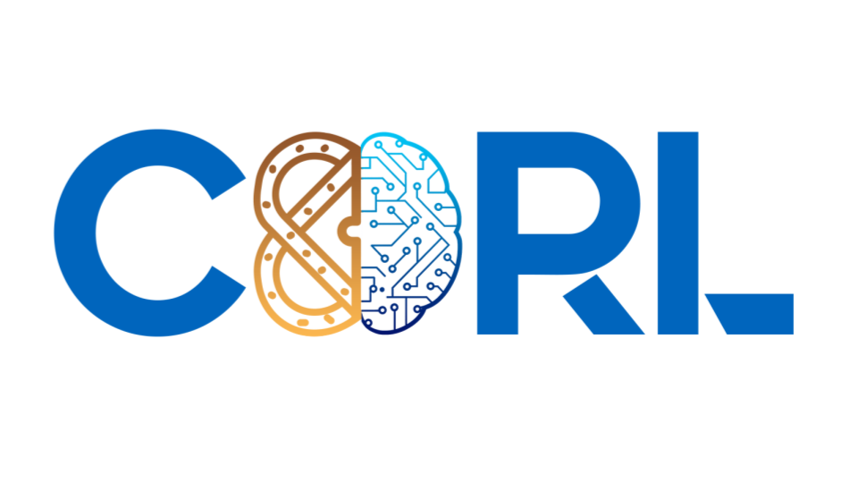

|
Eric Cai Hello! I am a second-year Master's student in the Robotics Institute at Carnegie Mellon University, advised by Prof. David Held. I am broadly interested in well-structured visual representations for generalizable manipulation. My ultimate goal is to develop a unified learning framework for visual and physical intelligence. Prior to joining Carnegie Mellon University, I spent two years as an applied data scientist at The Boeing Company, where I worked with the US Navy to develop machine learning systems for the F/A-18 program. Before that, I earned my B.S. in Computer Science from Washington University in St. Louis in 2021, with a Second Major in Mathematics. |
Research |
|
TaskSeg: Unsupervised Deep Instruction Tuning for Few Shot Object Segmentation
Jessica Brown*, Teeratham Vitchutripop*, Eric Cai, Jenny Wang, David Held Under Review, 2025 Project Page Leveraging optical flow from demonstration videos for unsupervised novel object segmentation. |
|

|
Non-rigid Relative Placement through 3D Dense Diffusion
Eric Cai, Octavian Donca, Ben Eisner, David Held 8th Conference on Robot Learning, 2024 Project Page / Bibtex / arXiv / Code A point cloud diffusion approach for non-rigid goal prediction, allowing for a generalizable deformable manipulation policy. |
|  |
Sequential Object-Centric Relative Placement Prediction for Long-horizon Imitation Learning
Ben Eisner, Eric Cai, Octavian Donca, Teeratham Vitchutripop, David Held Learning Effective Abstractions for Planning (LEAP) Workshop @ CoRL, 2024 Project Page An approach modeling precise object-object relationships for long-horizon sequential manipulation tasks. |
|
Template borrowed from Jon Barron's website. |